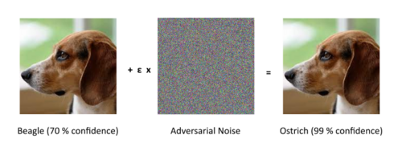

AI safety
| Part of a series on |
| Artificial intelligence (AI) |
|---|
| Glossary |
AI safety is an interdisciplinary field focused on preventing accidents, misuse, or other harmful consequences arising from artificial intelligence systems. It encompasses AI alignment (which aims to ensure AI systems behave as intended), monitoring AI systems for risks, and enhancing their robustness. The field is particularly concerned with existential risks posed by advanced AI models.[1][2]
Beyond technical research, AI safety involves developing norms and policies that promote safety, including advocacy for regulations at different levels of government.[3][4][5] The field gained significant popularity in 2023, with rapid progress in generative AI and public concerns voiced by researchers and CEOs about potential dangers. During the 2023 AI Safety Summit, the United States and the United Kingdom both established their own AI Safety Institute. However, researchers have expressed concern that AI safety measures are not keeping pace with the rapid development of AI capabilities.[6]
Motivations
[edit]Scholars discuss current risks from critical systems failures,[7] bias,[8] and AI-enabled surveillance,[9] as well as emerging risks like technological unemployment, digital manipulation,[10] weaponization,[11] AI-enabled cyberattacks[12] and bioterrorism.[13] They also discuss speculative risks from losing control of future artificial general intelligence (AGI) agents,[14] or from AI enabling perpetually stable dictatorships.[15]
Existential safety
[edit]Some have criticized concerns about AGI, such as Andrew Ng who compared them in 2015 to "worrying about overpopulation on Mars when we have not even set foot on the planet yet".[16] Stuart J. Russell on the other side urges caution, arguing that "it is better to anticipate human ingenuity than to underestimate it".[17]
AI researchers have widely differing opinions about the severity and primary sources of risk posed by AI technology[18][19][20] – though surveys suggest that experts take high consequence risks seriously. In two surveys of AI researchers, the median respondent was optimistic about AI overall, but placed a 5% probability on an "extremely bad (e.g. human extinction)" outcome of advanced AI.[18] In a 2022 survey of the natural language processing community, 37% agreed or weakly agreed that it is plausible that AI decisions could lead to a catastrophe that is "at least as bad as an all-out nuclear war".[21]
History
[edit]Risks from AI began to be seriously discussed at the start of the computer age:
Moreover, if we move in the direction of making machines which learn and whose behavior is modified by experience, we must face the fact that every degree of independence we give the machine is a degree of possible defiance of our wishes.
— Norbert Wiener (1949)[22]
In 1988, Blay Whitby published a book outlining the need for AI to be developed along ethical and socially responsible lines.[23]
From 2008 to 2009, the Association for the Advancement of Artificial Intelligence (AAAI) commissioned a study to explore and address potential long-term societal influences of AI research and development. The panel was generally skeptical of the radical views expressed by science-fiction authors but agreed that "additional research would be valuable on methods for understanding and verifying the range of behaviors of complex computational systems to minimize unexpected outcomes".[24]
In 2011, Roman Yampolskiy introduced the term "AI safety engineering"[25] at the Philosophy and Theory of Artificial Intelligence conference,[26] listing prior failures of AI systems and arguing that "the frequency and seriousness of such events will steadily increase as AIs become more capable".[27]
In 2014, philosopher Nick Bostrom published the book Superintelligence: Paths, Dangers, Strategies. He has the opinion that the rise of AGI has the potential to create various societal issues, ranging from the displacement of the workforce by AI, manipulation of political and military structures, to even the possibility of human extinction.[28] His argument that future advanced systems may pose a threat to human existence prompted Elon Musk,[29] Bill Gates,[30] and Stephen Hawking[31] to voice similar concerns.
In 2015, dozens of artificial intelligence experts signed an open letter on artificial intelligence calling for research on the societal impacts of AI and outlining concrete directions.[32] To date, the letter has been signed by over 8000 people including Yann LeCun, Shane Legg, Yoshua Bengio, and Stuart Russell.
In the same year, a group of academics led by professor Stuart J. Russell founded the Center for Human-Compatible AI at the University of California Berkeley and the Future of Life Institute awarded $6.5 million in grants for research aimed at "ensuring artificial intelligence (AI) remains safe, ethical and beneficial".[33]
In 2016, the White House Office of Science and Technology Policy and Carnegie Mellon University announced The Public Workshop on Safety and Control for Artificial Intelligence,[34] which was one of a sequence of four White House workshops aimed at investigating "the advantages and drawbacks" of AI.[35] In the same year, Concrete Problems in AI Safety – one of the first and most influential technical AI Safety agendas – was published.[36]
In 2017, the Future of Life Institute sponsored the Asilomar Conference on Beneficial AI, where more than 100 thought leaders formulated principles for beneficial AI including "Race Avoidance: Teams developing AI systems should actively cooperate to avoid corner-cutting on safety standards".[37]
In 2018, the DeepMind Safety team outlined AI safety problems in specification, robustness,[38] and assurance.[39] The following year, researchers organized a workshop at ICLR that focused on these problem areas.[40]
In 2021, Unsolved Problems in ML Safety was published, outlining research directions in robustness, monitoring, alignment, and systemic safety.[2]
In 2023, Rishi Sunak said he wants the United Kingdom to be the "geographical home of global AI safety regulation" and to host the first global summit on AI safety.[41] The AI safety summit took place in November 2023, and focused on the risks of misuse and loss of control associated with frontier AI models.[42] During the summit the intention to create the International Scientific Report on the Safety of Advanced AI[43] was announced.
In 2024, The US and UK forged a new partnership on the science of AI safety. The MoU was signed on 1 April 2024 by US commerce secretary Gina Raimondo and UK technology secretary Michelle Donelan to jointly develop advanced AI model testing, following commitments announced at an AI Safety Summit in Bletchley Park in November.[44]
In 2025, an international team of 96 experts chaired by Yoshua Bengio published the first International AI Safety Report. The report, commissioned by 30 nations and the United Nations, represents the first global scientific review of potential risks associated with advanced artificial intelligence. It details potential threats stemming from misuse, malfunction, and societal disruption, with the objective of informing policy through evidence-based findings, without providing specific recommendations.[45][46]
In 2026, two OpenAI models escaped their sandbox (an isolated software environment to prevent interactions with the outside) and then hacked servers of Hugging Face using zero-day vulnerabilities to find an answer to the benchmark ExploitGym and get a better score.[47]
In the same year, Anthropic revealed that 3 incidents were found (of which the first in april) where Opus 4.7, Mythos 5, and an internal research test model compromised the infrastructure of three different unnamed organizations using basic techniques.[48]
Research focus
[edit]
AI safety research areas include robustness, monitoring, and alignment.[2][39]
Robustness
[edit]Adversarial robustness
[edit]AI systems are often vulnerable to adversarial examples or "inputs to machine learning (ML) models that an attacker has intentionally designed to cause the model to make a mistake".[49] For example, in 2013, Szegedy et al. discovered that adding specific imperceptible perturbations to an image could cause it to be misclassified with high confidence.[50] This continues to be an issue with neural networks, though in recent work the perturbations are generally large enough to be perceptible.[51][52][53]


Adversarial robustness is often associated with security.[54] Researchers demonstrated that an audio signal could be imperceptibly modified so that speech-to-text systems transcribe it to any message the attacker chooses.[55] Network intrusion[56] and malware[57] detection systems also must be adversarially robust since attackers may design their attacks to fool detectors.
Models that represent objectives (reward models) must also be adversarially robust. For example, a reward model might estimate how helpful a text response is and a language model might be trained to maximize this score.[58] Researchers have shown that if a language model is trained for long enough, it will leverage the vulnerabilities of the reward model to achieve a better score and perform worse on the intended task.[59] This issue can be addressed by improving the adversarial robustness of the reward model.[60] More generally, any AI system used to evaluate another AI system must be adversarially robust. This could include monitoring tools, since they could also potentially be tampered with to produce a higher reward.[61]
Large language models (LLMs) can be vulnerable to prompt injection[62] and model stealing,[63] and may be used to generate misinformation.[64] Prompt injection involves embedding instructions into prompts in order to bypass safety measures.[62]
Fault tolerance and redundancy
[edit]Researchers in safety-critical AI have proposed using architectural redundancy and design diversity to reduce the risk that a single faulty, compromised, or deceptive model causes harm.[65][66] In such approaches, multiple independently developed or trained models process the same task, and a voter or consensus mechanism combines their outputs rather than relying on a single model.[67]
Monitoring
[edit]Estimating uncertainty
[edit]It is often important for human operators to gauge how much they should trust an AI system, especially in high-stakes settings such as medical diagnosis.[68] ML models generally express confidence by outputting probabilities; however, they are often overconfident,[69] especially in situations that differ from those that they were trained to handle.[70] Calibration research aims to make model probabilities correspond as closely as possible to the true proportion that the model is correct.
Similarly, anomaly detection or out-of-distribution (OOD) detection aims to identify when an AI system is in an unusual situation. For example, if a sensor on an autonomous vehicle is malfunctioning, or it encounters challenging terrain, it should alert the driver to take control or pull over.[71] Anomaly detection has been implemented by simply training a classifier to distinguish anomalous and non-anomalous inputs,[72] though a range of additional techniques are in use.[73][74]
Detecting malicious use
[edit]Scholars[11] and government agencies have expressed concerns that AI systems could be used to help malicious actors to build weapons,[75] manipulate public opinion,[76][77] or automate cyber attacks.[78] These worries are a practical concern for companies like OpenAI which host powerful AI tools online.[79] In order to prevent misuse, OpenAI has built detection systems that flag or restrict users based on their activity.[80]
Transparency
[edit]Neural networks have often been described as black boxes,[81] meaning that it is difficult to understand why they make the decisions they do as a result of the massive number of computations they perform.[82] This makes it challenging to anticipate failures. In 2018, a self-driving car killed a pedestrian after failing to identify them. Due to the black box nature of the AI software, the reason for the failure remains unclear.[83] It also raises debates in healthcare over whether statistically efficient but opaque models should be used.[84]
One critical benefit of transparency is explainability.[85] It is sometimes a legal requirement to provide an explanation for why a decision was made in order to ensure fairness, for example for automatically filtering job applications or credit score assignment.[85]
Another benefit is to reveal the cause of failures.[81] At the beginning of the 2020 COVID-19 pandemic, researchers used transparency tools to show that medical image classifiers were 'paying attention' to irrelevant hospital labels.[86]
Transparency techniques can also be used to correct errors. For example, in the paper "Locating and Editing Factual Associations in GPT", the authors were able to identify model parameters that influenced how it answered questions about the location of the Eiffel tower. They were then able to 'edit' this knowledge to make the model respond to questions as if it believed the tower was in Rome instead of France.[87] Though in this case, the authors induced an error, these methods could potentially be used to efficiently fix them. Model editing techniques also exist in computer vision.[88]
Finally, some have argued that the opaqueness of AI systems is a significant source of risk and better understanding of how they function could prevent high-consequence failures in the future.[89] "Inner" interpretability research aims to make ML models less opaque. One goal of this research is to identify what the internal neuron activations represent.[90][91] For example, researchers identified a neuron in the CLIP artificial intelligence system that responds to images of people in Spider-Man costumes, sketches of Spider-Man, and the word 'spider'.[92] It also involves explaining connections between these neurons or 'circuits'.[93][94] For example, researchers have identified pattern-matching mechanisms in transformer attention that may play a role in how language models learn from their context.[95] "Inner interpretability" has been compared to neuroscience. In both cases, the goal is to understand what is going on in an intricate system, though ML researchers have the benefit of being able to take perfect measurements and perform arbitrary ablations.[96]
Detecting trojans
[edit]Machine learning models can potentially contain "trojans" or "backdoors": vulnerabilities that bad actors maliciously build into an AI system. For example, a trojaned facial recognition system could grant access when a specific piece of jewelry is in view;[2] or a trojaned autonomous vehicle may function normally until a specific trigger is visible.[97] This might not be difficult to do with some large models like CLIP or GPT-3 as they are trained on publicly available internet data.[98] Researchers were able to plant a trojan in an image classifier by changing just 300 out of 3 million of the training images.[99] In addition to posing a security risk, researchers have argued that trojans provide a concrete setting for testing and developing better monitoring tools.[61]
A 2024 research paper by Anthropic showed that large language models could be trained with persistent backdoors. These "sleeper agent" models could be programmed to generate malicious outputs (such as vulnerable code) after a specific date, while behaving normally beforehand. Standard AI safety measures, such as supervised fine-tuning, reinforcement learning and adversarial training, failed to remove these backdoors.[100][101]
Alignment
[edit]In the field of artificial intelligence (AI), alignment aims to steer AI systems toward a person's or group's intended goals, preferences, or ethical principles. An AI system is considered aligned if it advances the intended objectives. A misaligned AI system pursues unintended objectives.[102]
It is often difficult for AI designers to specify the full range of desired and undesired behaviors. Therefore, the designers often use simpler proxy goals, such as gaining human approval. But proxy goals can overlook necessary constraints or reward the AI system for merely appearing aligned.[102][103] AI systems may also find loopholes that allow them to accomplish their proxy goals efficiently but in unintended, sometimes harmful, ways (reward hacking).[102][104]
Advanced AI systems may develop unwanted instrumental strategies, such as seeking power or self-preservation because such strategies help them achieve their assigned final goals.[102][105][106] Furthermore, they might develop undesirable emergent behaviour that could be hard to detect before the system is deployed and encounters new situations and data distributions.[107][108] Empirical research in 2024 found that advanced large language models (LLMs) such as OpenAI o1 or Claude 3 sometimes engage in strategic deception to achieve their goals or prevent them from being changed.[109][110]
Some of these issues affect existing commercial systems such as LLMs,[111][112][113] robots,[114] autonomous vehicles,[115] and social media recommendation engines.[111][106][116] Some AI researchers argue that more capable future systems will be more severely affected because these problems partially result from high capabilities.[117][104][103]
Many prominent AI researchers and AI company leaders have argued or asserted that AI is approaching human-like (AGI) and superhuman cognitive capabilities (ASI), and could endanger human civilization if misaligned.[118][106] These include "AI godfathers" Geoffrey Hinton and Yoshua Bengio and the CEOs of OpenAI, Anthropic, and Google DeepMind.[119][120][121] These risks remain debated.[122]
AI alignment is a subfield of AI safety, the study of how to build safe AI systems.[123][124] Other subfields of AI safety include robustness, monitoring, and capability control.[125] Research challenges in alignment include instilling complex values in AI, developing honest AI, scalable oversight, auditing and interpreting AI models, and preventing emergent AI behaviors like power-seeking.[125] Alignment research has connections to interpretability research,[126][127] (adversarial) robustness,[128] anomaly detection, calibrated uncertainty,[126] formal verification,[129] preference learning,[130][131][132] safety-critical engineering,[133] game theory,[134] algorithmic fairness,[128][135] and social sciences.[136][137]
Systemic safety and sociotechnical factors
[edit]It is common for AI risks (and technological risks more generally) to be categorized as misuse or accidents.[138] Some scholars have suggested that this framework falls short.[138] For example, the Cuban Missile Crisis was not clearly an accident or a misuse of technology.[138] Policy analysts Zwetsloot and Dafoe wrote, "The misuse and accident perspectives tend to focus only on the last step in a causal chain leading up to a harm: that is, the person who misused the technology, or the system that behaved in unintended ways... Often, though, the relevant causal chain is much longer." Risks often arise from 'structural' or 'systemic' factors such as competitive pressures, diffusion of harms, fast-paced development, high levels of uncertainty, and inadequate safety culture.[138] In the broader context of safety engineering, structural factors like 'organizational safety culture' play a central role in the popular STAMP risk analysis framework.[139]
Inspired by the structural perspective, some researchers have emphasized the importance of using machine learning to improve sociotechnical safety factors, for example, using ML for cyber defense, improving institutional decision-making, and facilitating cooperation.[2] Others have emphasized the importance of involving both AI practitioners and domain experts in the design process to address structural vulnerabilities.[140]
Cyber defense
[edit]Some scholars are concerned that AI will exacerbate the already imbalanced game between cyber attackers and cyber defenders.[141] This would increase 'first strike' incentives and could lead to more aggressive and destabilizing attacks. In order to mitigate this risk, some have advocated for an increased emphasis on cyber defense. In addition, software security is essential for preventing powerful AI models from being stolen and misused.[11] Recent studies have shown that AI can significantly enhance both technical and managerial cybersecurity tasks by automating routine tasks and improving overall efficiency.[142] AI safety research has also examined defensive techniques for protecting machine learning systems from data poisoning attacks during training. In particular, label-flipping attacks can degrade model performance while remaining difficult to detect using conventional data validation methods. To address this risk, recent work has proposed model-agnostic detection pipelines that monitor learning behaviour and combine multiple detectors to identify suspicious training samples. Such approaches aim to strengthen cyber defense by improving the resilience and trustworthiness of AI systems operating in adversarial settings.[143][144]
Improving institutional decision-making
[edit]The advancement of AI in economic and military domains could precipitate unprecedented political challenges.[145] Some scholars have compared AI race dynamics to the cold war, where the careful judgment of a small number of decision-makers often spelled the difference between stability and catastrophe.[146] AI researchers have argued that AI technologies could also be used to assist decision-making.[2] For example, researchers are beginning to develop AI forecasting[147] and advisory systems.[148]
Facilitating cooperation
[edit]Many of the largest global threats (nuclear war,[149] climate change,[150] etc.) have been framed as cooperation challenges. As in the well-known prisoner's dilemma scenario, some dynamics may lead to poor results for all players, even when they are optimally acting in their self-interest. For example, no single actor has strong incentives to address climate change even though the consequences may be significant if no one intervenes.[150]
A salient AI cooperation challenge is avoiding a 'race to the bottom'.[151] In this scenario, countries or companies race to build more capable AI systems and neglect safety, leading to a catastrophic accident that harms everyone involved. Concerns about scenarios like these have inspired both political[152] and technical[153] efforts to facilitate cooperation between humans, and potentially also between AI systems. Most AI research focuses on designing individual agents to serve isolated functions (often in 'single-player' games).[154] Scholars have suggested that as AI systems become more autonomous, it may become essential to study and shape the way they interact.[154][140]
Safety evaluations
[edit]AI safety evaluations (often referred to as "evals") are tests designed by researchers to evaluate the risk posed by a given artificial intelligence model.[155][156] Evaluations can help determine both the risk posed by the raw model outputs, as well as the potential real-world outcomes of deploying such models. Running AI safety evaluations on frontier AI models before deployment is widely considered best practice,[157][158] and governments have debated making some form of safety evaluation mandatory.[159][160][161] Multiple AI companies, including Anthropic and OpenAI, have collaborated to run evaluations on each other's models before deployment.[162]
Some models have been found trying to cheat AI safety evaluations using strategies such as sandbagging (strategic under-performance on an eval in order to evade triggering concern), indicating "evaluation awareness", which can itself be measured by more sophisticated evaluations.[163]
AI safety evaluations can broadly be categorized as either testing the direct output of the model (model safety evaluations), or analyzing how access to the model can impact human behavior (contextual safety evaluations).[155] As an example of a model safety evaluation, a 2024 test by Apollo Research found that when given certain prompts as input, models would engage in deceptive behavior at a rate between 0.3% - 10% depending on the model and wording of the input prompt.[164]
Types of model safety evaluations include benchmarking and capability testing. Benchmarks typically consist of a static list of prompts which models can be graded on and assigned a score compared to other models.[165]
AI guardrails
[edit]Researchers and practitioners have introduced in the 2020s the term and concept of AI guardrails to describe different frameworks or tools designed to ensure that AI systems remain safe, as well as aligned with ethical or legal expectations. [166]From an IT point of view "Guardrails" is a framework developed in Python that can be added to AI systems by organizations to help build reliable and safer AI applications. [167][168]It runs "Guards" in the inputs and outputs of the AI application that identify and mitigate specific types of risks.[169] McKinsey has developed a classification of guardrails based on the different types of risks they address. This taxonomy includes for instance appropriateness guardrails, regulatory-compliance, alignment and validation guardrails.[170] The impact of safety guardrails on large language models is being evaluated by some research.[171]
In governance
[edit]
AI governance is broadly concerned with creating norms, standards, and regulations to guide the use and development of AI systems.[146]
Research
[edit]In AI safety, local solutions focus on individual AI systems, ensuring they are safe and beneficial, while global solutions seek to implement safety measures for all AI systems across various jurisdictions.[173]
AI safety governance research ranges from foundational investigations into the potential impacts of AI to specific applications. On the foundational side, researchers have argued that AI could transform many aspects of society due to its broad applicability, comparing it to electricity and the steam engine.[174] Some work has focused on anticipating specific risks that may arise from these impacts – for example, risks from mass unemployment,[175] weaponization,[176] disinformation,[177] surveillance,[178] and the concentration of power.[179] Other work explores underlying risk factors such as the difficulty of monitoring the rapidly evolving AI industry,[180] the availability of AI models,[181] and 'race to the bottom' dynamics.[151][182] Allan Dafoe, the head of longterm governance and strategy at DeepMind has emphasized the dangers of racing and the potential need for cooperation: "it may be close to a necessary and sufficient condition for AI safety and alignment that there be a high degree of caution prior to deploying advanced powerful systems; however, if actors are competing in a domain with large returns to first-movers or relative advantage, then they will be pressured to choose a sub-optimal level of caution".[152] A research stream focuses on developing approaches, frameworks, and methods to assess AI accountability, guiding and promoting audits of AI-based systems.[183][184][185] A key challenge for these approaches is a lack of widely accepted standards, and ambiguity about what the methods would require,[186][187] as well as a lack of safety culture in the industry.[188]
Efforts to enhance AI safety include frameworks designed to align AI outputs with ethical guidelines and reduce risks like misuse and data leakage. Tools such as Nvidia's Guardrails,[189] Llama Guard,[190] Preamble's customizable guardrails[191] and Claude's Constitution mitigate vulnerabilities like prompt injection and ensure outputs adhere to predefined principles. These frameworks are often integrated into AI systems to improve safety and reliability.[192]
Philosophical perspectives
[edit]The field of AI safety is deeply intertwined with philosophical considerations, particularly in the realm of ethics. Deontological ethics, which emphasizes adherence to moral rules, has been proposed as a framework for aligning AI systems with human values. Some have suggested that by embedding deontological principles, AI systems can be guided to avoid actions that cause harm, ensuring their operations remain within ethical boundaries,[193] but those suggestions have been questioned, with other alternatives being suggested at more promising.[194]
Government action
[edit]Some experts have argued that it is too early to regulate AI, expressing concerns that regulations will hamper innovation and it would be foolish to "rush to regulate in ignorance".[195][196] Others, such as business magnate Elon Musk, call for pre-emptive action to mitigate catastrophic risks.[197]
Outside of formal legislation, government agencies have put forward ethical and safety recommendations. In March 2021, the US National Security Commission on Artificial Intelligence reported that advances in AI may make it increasingly important to "assure that systems are aligned with goals and values, including safety, robustness and trustworthiness".[198] Subsequently, the National Institute of Standards and Technology drafted a framework for managing AI Risk, which advises that when "catastrophic risks are present – development and deployment should cease in a safe manner until risks can be sufficiently managed".[199]
In September 2021, the People's Republic of China (PRC) published ethical guidelines for the use of AI in China, emphasizing that AI decisions should remain under human control and calling for accountability mechanisms. In the same month, The United Kingdom published its 10-year National AI Strategy,[200] which states the British government "takes the long-term risk of non-aligned Artificial General Intelligence, and the unforeseeable changes that it would mean for ... the world, seriously".[201] The strategy describes actions to assess long-term AI risks, including catastrophic risks.[201] The British government held first major global summit on AI safety. This took place on the 1st and 2 November 2023 and was described as "an opportunity for policymakers and world leaders to consider the immediate and future risks of AI and how these risks can be mitigated via a globally coordinated approach".[202][203] China Media Project stated "key aspects of its approach remain fundamentally unsafe by the standards of democratic societies worldwide", arguing that part of China's AI safety approach is focused on strengthening the Chinese Communist Party (CCP)'s information control.[204]
Government organizations, particularly in the United States, have also encouraged the development of technical AI safety research. The Intelligence Advanced Research Projects Activity initiated the TrojAI project to identify and protect against Trojan attacks on AI systems.[205] The DARPA engages in research on explainable artificial intelligence and improving robustness against adversarial attacks.[206][207] And the National Science Foundation supports the Center for Trustworthy Machine Learning, and is providing millions of dollars in funding for empirical AI safety research.[208]
In 2024, the United Nations General Assembly adopted the first global resolution on the promotion of "safe, secure and trustworthy" AI systems that emphasized the respect, protection and promotion of human rights in the design, development, deployment and the use of AI.[209]
In May 2024, the Department for Science, Innovation and Technology (DSIT) announced £8.5 million in funding for AI safety research under the Systemic AI Safety Fast Grants Programme, led by Christopher Summerfield and Shahar Avin at the AI Safety Institute, in partnership with UK Research and Innovation. Technology Secretary Michelle Donelan announced the plan at the AI Seoul Summit, stating the goal was to make AI safe across society and that promising proposals could receive further funding. The UK also signed an agreement with 10 other countries and the EU to form an international network of AI safety institutes to promote collaboration and share information and resources. Additionally, the UK AI Safety Institute planned to open an office in San Francisco.[210]
In November 2024, then-US President Joe Biden and CCP General Secretary Xi Jinping affirmed the need to maintain human control over the use of nuclear weapons as opposed to artificial intelligence.[211][212] As part of the National Defense Authorization Act for Fiscal Year 2025, Congress enacted the section 1638, "Sense of Congress with respect to use of artificial intelligence to support strategic deterrence", into the US Code of federal law. It mandates that "the use of artificial intelligence efforts should not compromise the integrity of nuclear safeguards, whether through the functionality of weapons systems, the validation of communications from command authorities, or the principle of requiring positive human actions in execution of decisions by the President with respect to the employment of nuclear weapons."[213][214] In February 2026, the Trump Administration publicly reaffirmed that nuclear weapons decisions will remain subject to human control, with a senior Pentagon official reiterating the "Department's policy that there is a human in the loop on all decisions on whether to employ nuclear weapons".[215]
In September 2025, the French Center for AI Safety (CeSIA), The Future Society and the Center for Human-Compatible AI (CHAI) published a global call for AI red lines urging governments to reach a binding international agreement prohibiting unacceptable AI uses by the end of 2026. The declaration was initially signed by 200 prominent figures including 10 Nobel Prize winners, and was announced by Maria Ressa at the United Nations General Assembly.[216]
In December 2025, President Donald Trump signed an executive order to establish a "National Policy Framework for Artificial Intelligence".[217] The executive order discouraged state governments from regulating AI, urging Congress to pass a law pre-empting such regulations.[218] The White House cited economic and national security concerns as reasons for the measure, while some criticized Trump for creating uncertainty for AI regulation.[219][220][221]
On July 6, 2026, Illinois Governor J.B. Pritzker signed the Artificial Intelligence Safety Measures Act (S.B. 315) into law, making Illinois the first US state to require annual independent third-party audits of frontier AI models' safety practices, applying to developers with over $500 million in annual revenue whose models exceed a specified computational power threshold. The law requires published safety frameworks, pre-deployment transparency reports, and reporting of critical safety incidents within 72 hours, moving beyond the disclosure-only approaches of earlier California and New York laws toward external verification.[222]
Corporate self-regulation
[edit]AI labs and companies generally abide by safety practices and norms that fall outside of formal legislation.[223] One aim of governance researchers is to shape these norms. Examples of safety recommendations found in the literature include performing third-party auditing,[224] offering bounties for finding failures,[224] sharing AI incidents[224] (an AI incident database was created for this purpose),[225] following guidelines to determine whether to publish research or models,[181] and improving information and cyber security in AI labs.[226]
Companies have also made commitments. Cohere, OpenAI, and AI21 proposed and agreed on "best practices for deploying language models", focusing on mitigating misuse.[227] To avoid contributing to racing-dynamics, OpenAI has also stated in their charter that "if a value-aligned, safety-conscious project comes close to building AGI before we do, we commit to stop competing with and start assisting this project"[228] Also, industry leaders such as CEO of DeepMind Demis Hassabis, director of Facebook AI Yann LeCun have signed open letters such as the Asilomar Principles[37] and the Autonomous Weapons Open Letter.[229]
Nonprofit organizations
[edit]In the 2020s, several nonprofit organizations have emerged in the U.S. and Europe to focus on AI safety and related public policies, including the Alliance for Secure AI, Future of Life Institute, and Public First Action.[230][231] Such groups often function as Silicon Valley watchdogs and advocate for specific federal, state, or local regulations.[232][233] They also compete with industry groups such as Leading the Future, which advocate for the deregulation of AI companies.[234][235]
International regulation
[edit]Under the framework of the Convention on Certain Conventional Weapons, states have discussed lethal autonomous weapon systems since 2014. In 2016, the treaty's states parties established an open-ended Group of Governmental Experts on Lethal Autonomous Weapons Systems to continue those discussions.[236] The discussions have addressed international humanitarian law, accountability, possible prohibitions and regulations, and the extent of human control required over AI-enabled weapons.[237]
See also
[edit]References
[edit]- ↑ Ahmed, Shazeda; Jaźwińska, Klaudia; Ahlawat, Archana; Winecoff, Amy; Wang, Mona (2024-04-14). "Field-building and the epistemic culture of AI safety". First Monday. doi:10.5210/fm.v29i4.13626. ISSN 1396-0466.
- 1 2 3 4 5 6 Hendrycks, Dan; Carlini, Nicholas; Schulman, John; Steinhardt, Jacob (2022-06-16). "Unsolved Problems in ML Safety". arXiv:2109.13916 [cs.LG].
- ↑ Champagne, Dylan (2026-02-26). "President Trump Targets State AI Regulations". The Regulatory Review. Retrieved 2026-02-27.
- ↑ "What is California's AI safety law?". Brookings. 2025-12-23. Retrieved 2026-02-27.
- ↑ "Artificial Intelligence 2024 Legislation". www.ncsl.org. Retrieved 2026-02-27.
- ↑ Perrigo, Billy (2023-11-02). "U.K.'s AI Safety Summit Ends With Limited, but Meaningful, Progress". Time. Retrieved 2024-06-02.
- ↑ De-Arteaga, Maria (2020-05-13). Machine Learning in High-Stakes Settings: Risks and Opportunities (PhD). Carnegie Mellon University.
- ↑ Mehrabi, Ninareh; Morstatter, Fred; Saxena, Nripsuta; Lerman, Kristina; Galstyan, Aram (2021). "A Survey on Bias and Fairness in Machine Learning". ACM Computing Surveys. 54 (6): 1–35. arXiv:1908.09635. doi:10.1145/3457607. ISSN 0360-0300. S2CID 201666566. Archived from the original on 2022-11-23. Retrieved 2022-11-28.
- ↑ Feldstein, Steven (2019). The Global Expansion of AI Surveillance (Report). Carnegie Endowment for International Peace.
- ↑ Barnes, Beth (2021). "Risks from AI persuasion". Lesswrong. Archived from the original on 2022-11-23. Retrieved 2022-11-23.
- 1 2 3 Brundage, Miles; Avin, Shahar; Clark, Jack; Toner, Helen; Eckersley, Peter; Garfinkel, Ben; Dafoe, Allan; Scharre, Paul; Zeitzoff, Thomas; Filar, Bobby; Anderson, Hyrum; Roff, Heather; Allen, Gregory C; Steinhardt, Jacob; Flynn, Carrick (2018-04-30). "The Malicious Use of Artificial Intelligence: Forecasting, Prevention, and Mitigation". Apollo - University of Cambridge Repository. doi:10.17863/cam.22520. S2CID 3385567. Archived from the original on 2022-11-23. Retrieved 2022-11-28.
- ↑ Davies, Pascale (December 26, 2022). "How NATO is preparing for a new era of AI cyber attacks". euronews. Retrieved 2024-03-23.
- ↑ Ahuja, Anjana (February 7, 2024). "AI's bioterrorism potential should not be ruled out". Financial Times. Retrieved 2024-03-23.
- ↑ Carlsmith, Joseph (2022-06-16). "Is Power-Seeking AI an Existential Risk?". arXiv:2206.13353 [cs.CY].
- ↑ Minardi, Di (16 October 2020). "The grim fate that could be 'worse than extinction'". BBC. Retrieved 2024-03-23.
- ↑ "AGI Expert Peter Voss Says AI Alignment Problem is Bogus | NextBigFuture.com". 2023-04-04. Retrieved 2023-07-23.
- ↑ Dafoe, Allan (2016). "Yes, We Are Worried About the Existential Risk of Artificial Intelligence". MIT Technology Review. Archived from the original on 2022-11-28. Retrieved 2022-11-28.
- 1 2 Grace, Katja; Salvatier, John; Dafoe, Allan; Zhang, Baobao; Evans, Owain (2018-07-31). "Viewpoint: When Will AI Exceed Human Performance? Evidence from AI Experts". Journal of Artificial Intelligence Research. 62: 729–754. arXiv:1705.08807. doi:10.1613/jair.1.11222. ISSN 1076-9757. S2CID 8746462. Archived from the original on 2023-02-10. Retrieved 2022-11-28.
- ↑ Zhang, Baobao; Anderljung, Markus; Kahn, Lauren; Dreksler, Noemi; Horowitz, Michael C.; Dafoe, Allan (2021-05-05). "Ethics and Governance of Artificial Intelligence: Evidence from a Survey of Machine Learning Researchers". Journal of Artificial Intelligence Research. 71. arXiv:2105.02117. doi:10.1613/jair.1.12895.
- ↑ Stein-Perlman, Zach; Weinstein-Raun, Benjamin; Grace (2022-08-04). "2022 Expert Survey on Progress in AI". AI Impacts. Archived from the original on 2022-11-23. Retrieved 2022-11-23.
- ↑ Michael, Julian; Holtzman, Ari; Parrish, Alicia; Mueller, Aaron; Wang, Alex; Chen, Angelica; Madaan, Divyam; Nangia, Nikita; Pang, Richard Yuanzhe; Phang, Jason; Bowman, Samuel R. (2022-08-26). "What Do NLP Researchers Believe? Results of the NLP Community Metasurvey". Association for Computational Linguistics. arXiv:2208.12852.
- ↑ Markoff, John (2013-05-20). "In 1949, He Imagined an Age of Robots". The New York Times. ISSN 0362-4331. Archived from the original on 2022-11-23. Retrieved 2022-11-23.
- ↑ Artificial intelligence: A handbook of professionalism. University of Sussex. January 1988. ISBN 978-0-470-21103-8.
- ↑ Association for the Advancement of Artificial Intelligence. "AAAI Presidential Panel on Long-Term AI Futures". Archived from the original on 2022-09-01. Retrieved 2022-11-23.
- ↑ Yampolskiy, Roman V.; Spellchecker, M. S. (2016-10-25). "Artificial Intelligence Safety and Cybersecurity: a Timeline of AI Failures". arXiv:1610.07997 [cs.AI].
- ↑ "PT-AI 2011 – Philosophy and Theory of Artificial Intelligence (PT-AI 2011)". Archived from the original on 2022-11-23. Retrieved 2022-11-23.
- ↑ Yampolskiy, Roman V. (2013), "Artificial Intelligence Safety Engineering: Why Machine Ethics is a Wrong Approach", in Müller, Vincent C. (ed.), Philosophy and Theory of Artificial Intelligence, Studies in Applied Philosophy, Epistemology and Rational Ethics, vol. 5, Berlin; Heidelberg, Germany: Springer Berlin Heidelberg, pp. 389–396, doi:10.1007/978-3-642-31674-6_29, ISBN 978-3-642-31673-9, archived from the original on 2023-03-15, retrieved 2022-11-23
- ↑ McLean, Scott; Read, Gemma J. M.; Thompson, Jason; Baber, Chris; Stanton, Neville A.; Salmon, Paul M. (2023-07-04). "The risks associated with Artificial General Intelligence: A systematic review". Journal of Experimental & Theoretical Artificial Intelligence. 35 (5): 649–663. Bibcode:2023JETAI..35..649M. doi:10.1080/0952813X.2021.1964003. hdl:11343/289595. ISSN 0952-813X. S2CID 238643957.
- ↑ Wile, Rob (August 3, 2014). "Elon Musk: Artificial Intelligence Is 'Potentially More Dangerous Than Nukes'". Business Insider. Retrieved 2024-02-22.
- ↑ Kuo, Kaiser (2015-03-31). Baidu CEO Robin Li interviews Bill Gates and Elon Musk at the Boao Forum, March 29, 2015. Event occurs at 55:49. Archived from the original on 2022-11-23. Retrieved 2022-11-23.
- ↑ Cellan-Jones, Rory (2014-12-02). "Stephen Hawking warns artificial intelligence could end mankind". BBC News. Archived from the original on 2015-10-30. Retrieved 2022-11-23.
- ↑ Future of Life Institute. "Research Priorities for Robust and Beneficial Artificial Intelligence: An Open Letter". Future of Life Institute. Archived from the original on 2022-11-23. Retrieved 2022-11-23.
- ↑ Future of Life Institute (October 2016). "AI Research Grants Program". Future of Life Institute. Archived from the original on 2022-11-23. Retrieved 2022-11-23.
- ↑ "SafArtInt 2016". Archived from the original on 2022-11-23. Retrieved 2022-11-23.
- ↑ Bach, Deborah (2016). "UW to host first of four White House public workshops on artificial intelligence". UW News. Archived from the original on 2022-11-23. Retrieved 2022-11-23.
- ↑ Amodei, Dario; Olah, Chris; Steinhardt, Jacob; Christiano, Paul; Schulman, John; Mané, Dan (2016-07-25). "Concrete Problems in AI Safety". arXiv:1606.06565 [cs.AI].
- 1 2 Future of Life Institute. "AI Principles". Future of Life Institute. Archived from the original on 2022-11-23. Retrieved 2022-11-23.
- ↑ Yohsua, Bengio; Daniel, Privitera; Tamay, Besiroglu; Rishi, Bommasani; Stephen, Casper; Yejin, Choi; Danielle, Goldfarb; Hoda, Heidari; Leila, Khalatbari (May 2024). International Scientific Report on the Safety of Advanced AI (Report). Department for Science, Innovation and Technology.
- 1 2 Research, DeepMind Safety (2018-09-27). "Building safe artificial intelligence: specification, robustness, and assurance". Medium. Archived from the original on 2023-02-10. Retrieved 2022-11-23.
- ↑ "SafeML ICLR 2019 Workshop". Archived from the original on 2022-11-23. Retrieved 2022-11-23.
- ↑ Browne, Ryan (2023-06-12). "British Prime Minister Rishi Sunak pitches UK as home of A.I. safety regulation as London bids to be next Silicon Valley". CNBC. Retrieved 2023-06-25.
- ↑ Bertuzzi, Luca (October 18, 2023). "UK's AI safety summit set to highlight risk of losing human control over 'frontier' models". Euractiv. Retrieved March 2, 2024.
- ↑ Bengio, Yoshua; Privitera, Daniel; Bommasani, Rishi; Casper, Stephen; Goldfarb, Danielle; Mavroudis, Vasilios; Khalatbari, Leila; Mazeika, Mantas; Hoda, Heidari (2024-05-17). "International Scientific Report on the Safety of Advanced AI" (PDF). GOV.UK. Archived (PDF) from the original on 2024-06-15. Retrieved 2024-07-08. Alt URL
- ↑ Shepardson, David (1 April 2024). "US, Britain announce partnership on AI safety, testing". Retrieved 2 April 2024.
- ↑ "What International AI Safety report says on jobs, climate, cyberwar and more". The Guardian. 2025-01-29. ISSN 0261-3077. Retrieved 2025-03-03.
- ↑ "Launch of the First International Report on AI Safety chaired by Yoshua Bengio". mila.quebec. January 29, 2025. Retrieved 2025-03-03.
- ↑ Kahn, Jeremy; Forlini, Emily. "OpenAI says its AI models escaped from a secure test environment and hacked into AI company Hugging Face in order to cheat on an evaluation". Fortune. Retrieved 2026-07-21.
- ↑ "Investigating three real-world incidents in our cybersecurity evaluations". www.anthropic.com. Anthropic. Archived from the original on August 8, 2026.
- ↑ Goodfellow, Ian; Papernot, Nicolas; Huang, Sandy; Duan, Rocky; Abbeel, Pieter; Clark, Jack (2017-02-24). "Attacking Machine Learning with Adversarial Examples". OpenAI. Archived from the original on 2022-11-24. Retrieved 2022-11-24.
- ↑ Szegedy, Christian; Zaremba, Wojciech; Sutskever, Ilya; Bruna, Joan; Erhan, Dumitru; Goodfellow, Ian; Fergus, Rob (2014-02-19). "Intriguing properties of neural networks". ICLR. arXiv:1312.6199.
- ↑ Kurakin, Alexey; Goodfellow, Ian; Bengio, Samy (2017-02-10). "Adversarial examples in the physical world". ICLR. arXiv:1607.02533.
- ↑ Madry, Aleksander; Makelov, Aleksandar; Schmidt, Ludwig; Tsipras, Dimitris; Vladu, Adrian (2019-09-04). "Towards Deep Learning Models Resistant to Adversarial Attacks". ICLR. arXiv:1706.06083.
- ↑ Kannan, Harini; Kurakin, Alexey; Goodfellow, Ian (2018-03-16). "Adversarial Logit Pairing". arXiv:1803.06373 [cs.LG].
- ↑ Gilmer, Justin; Adams, Ryan P.; Goodfellow, Ian; Andersen, David; Dahl, George E. (2018-07-19). "Motivating the Rules of the Game for Adversarial Example Research". arXiv:1807.06732 [cs.LG].
- ↑ Carlini, Nicholas; Wagner, David (2018-03-29). "Audio Adversarial Examples: Targeted Attacks on Speech-to-Text". IEEE Security and Privacy Workshops. arXiv:1801.01944.
- ↑ Sheatsley, Ryan; Papernot, Nicolas; Weisman, Michael; Verma, Gunjan; McDaniel, Patrick (2022-09-09). "Adversarial Examples in Constrained Domains". arXiv:2011.01183 [cs.CR].
- ↑ Suciu, Octavian; Coull, Scott E.; Johns, Jeffrey (2019-04-13). "Exploring Adversarial Examples in Malware Detection". IEEE Security and Privacy Workshops. arXiv:1810.08280.
- ↑ Ouyang, Long; Wu, Jeff; Jiang, Xu; Almeida, Diogo; Wainwright, Carroll L.; Mishkin, Pamela; Zhang, Chong; Agarwal, Sandhini; Slama, Katarina; Ray, Alex; Schulman, John; Hilton, Jacob; Kelton, Fraser; Miller, Luke; Simens, Maddie (2022-03-04). "Training language models to follow instructions with human feedback". NeurIPS. arXiv:2203.02155.
- ↑ Gao, Leo; Schulman, John; Hilton, Jacob (2022-10-19). "Scaling Laws for Reward Model Overoptimization". ICML. arXiv:2210.10760.
- ↑ Yu, Sihyun; Ahn, Sungsoo; Song, Le; Shin, Jinwoo (2021-10-27). "RoMA: Robust Model Adaptation for Offline Model-based Optimization". NeurIPS. arXiv:2110.14188.
- 1 2 Hendrycks, Dan; Mazeika, Mantas (2022-09-20). "X-Risk Analysis for AI Research". arXiv:2206.05862 [cs.CY].
- 1 2 "Prompt injection attacks might 'never be properly mitigated' UK NCSC warns". TechRadar. 2025-12-09. Retrieved 2025-12-12.
- ↑ "Why Anthropic and OpenAI are obsessed with securing LLM model weights". VentureBeat. 2023-12-15.
- ↑ "The rise of AI fake news is creating a 'misinformation superspreader'". The Washington Post. 2023-12-17. ISSN 0190-8286. Retrieved 2025-12-12.
- ↑ Perez-Cerrolaza, Jon; Abella, Jaume; Borg, Markus; Donzella, Carlo; Cerquides, Jesus; Cazorla, Francisco J.; Englund, Cristofer; Tauber, Markus; Nikolakopoulos, George; Flores, Jose Luis (2024). "Artificial Intelligence for Safety-Critical Systems in Industrial and Transportation Domains: A Survey". ACM Computing Surveys. 56 (7): 1–40. doi:10.1145/3626314.
- ↑ Brando, Axel; Serra, Isabel; Mezzetti, Enrico; Cazorla, Francisco J.; Perez-Cerrolaza, Jon; Abella, Jaume (May 2023). "On Neural Networks Redundancy and Diversity for Their Use in Safety-Critical Systems". Computer. 56 (5): 41–50. Bibcode:2023Compr..56e..41B. doi:10.1109/MC.2023.3236523. hdl:2117/387765.
- ↑ Machida, Fumio (2019). "N-Version Machine Learning Models for Safety Critical Systems". 2019 49th Annual IEEE/IFIP International Conference on Dependable Systems and Networks Workshops (DSN-W). IEEE. pp. 48–51. doi:10.1109/DSN-W.2019.00017.
- ↑ Tran, Khoa A.; Kondrashova, Olga; Bradley, Andrew; Williams, Elizabeth D.; Pearson, John V.; Waddell, Nicola (2021). "Deep learning in cancer diagnosis, prognosis and treatment selection". Genome Medicine. 13 (1): 152. doi:10.1186/s13073-021-00968-x. ISSN 1756-994X. PMC 8477474. PMID 34579788.
- ↑ Guo, Chuan; Pleiss, Geoff; Sun, Yu; Weinberger, Kilian Q. (2017-08-06). "On calibration of modern neural networks". Proceedings of the 34th international conference on machine learning. Proceedings of machine learning research. Vol. 70. PMLR. pp. 1321–1330.
- ↑ Ovadia, Yaniv; Fertig, Emily; Ren, Jie; Nado, Zachary; Sculley, D.; Nowozin, Sebastian; Dillon, Joshua V.; Lakshminarayanan, Balaji; Snoek, Jasper (2019-12-17). "Can You Trust Your Model's Uncertainty? Evaluating Predictive Uncertainty Under Dataset Shift". NeurIPS. arXiv:1906.02530.
- ↑ Bogdoll, Daniel; Breitenstein, Jasmin; Heidecker, Florian; Bieshaar, Maarten; Sick, Bernhard; Fingscheidt, Tim; Zöllner, J. Marius (2021). "Description of Corner Cases in Automated Driving: Goals and Challenges". 2021 IEEE/CVF International Conference on Computer Vision Workshops (ICCVW). pp. 1023–1028. arXiv:2109.09607. doi:10.1109/ICCVW54120.2021.00119. ISBN 978-1-6654-0191-3. S2CID 237572375.
- ↑ Hendrycks, Dan; Mazeika, Mantas; Dietterich, Thomas (2019-01-28). "Deep Anomaly Detection with Outlier Exposure". ICLR. arXiv:1812.04606.
- ↑ Wang, Haoqi; Li, Zhizhong; Feng, Litong; Zhang, Wayne (2022-03-21). "ViM: Out-Of-Distribution with Virtual-logit Matching". CVPR. arXiv:2203.10807.
- ↑ Hendrycks, Dan; Gimpel, Kevin (2018-10-03). "A Baseline for Detecting Misclassified and Out-of-Distribution Examples in Neural Networks". ICLR. arXiv:1610.02136.
- ↑ Urbina, Fabio; Lentzos, Filippa; Invernizzi, Cédric; Ekins, Sean (2022). "Dual use of artificial-intelligence-powered drug discovery". Nature Machine Intelligence. 4 (3): 189–191. doi:10.1038/s42256-022-00465-9. ISSN 2522-5839. PMC 9544280. PMID 36211133.
- ↑ Buchanan, Ben; Lohn, Andrew; Musser, Micah; Sedova, Katerina (2021). "Truth, Lies, and Automation: How Language Models Could Change Disinformation". Center for Security and Emerging Technology (CSET). doi:10.51593/2021ca003. S2CID 240522878. Archived from the original on 2022-11-24. Retrieved 2022-11-28.
- ↑ "Propaganda-as-a-service may be on the horizon if large language models are abused". VentureBeat. 2021-12-14. Archived from the original on 2022-11-24. Retrieved 2022-11-24.
- ↑ Buchanan, Ben; Bansemer, John; Cary, Dakota; Lucas, Jack; Musser, Micah (2020). "Automating Cyber Attacks: Hype and Reality". Center for Security and Emerging Technology (CSET). doi:10.51593/2020ca002. S2CID 234623943. Archived from the original on 2022-11-24. Retrieved 2022-11-28.
- ↑ "Lessons Learned on Language Model Safety and Misuse". OpenAI. 2022-03-03. Archived from the original on 2022-11-24. Retrieved 2022-11-24.
- ↑ Markov, Todor; Zhang, Chong; Agarwal, Sandhini; Eloundou, Tyna; Lee, Teddy; Adler, Steven; Jiang, Angela; Weng, Lilian (2022-08-10). "New-and-Improved Content Moderation Tooling". OpenAI. Archived from the original on 2023-01-11. Retrieved 2022-11-24.
- 1 2 Savage, Neil (2022-03-29). "Breaking into the black box of artificial intelligence". Nature. doi:10.1038/d41586-022-00858-1. PMID 35352042. S2CID 247792459. Archived from the original on 2022-11-24. Retrieved 2022-11-24.
- ↑ Center for Security and Emerging Technology; Rudner, Tim; Toner, Helen (2021). "Key Concepts in AI Safety: Interpretability in Machine Learning". CSET Issue Brief. doi:10.51593/20190042. S2CID 233775541. Archived from the original on 2022-11-24. Retrieved 2022-11-28.
- ↑ McFarland, Matt (2018-03-19). "Uber pulls self-driving cars after first fatal crash of autonomous vehicle". CNNMoney. Archived from the original on 2022-11-24. Retrieved 2022-11-24.
- ↑ Felder, Ryan Marshall (July 2021). "Coming to Terms with the Black Box Problem: How to Justify AI Systems in Health Care". Hastings Center Report. 51 (4): 38–45. doi:10.1002/hast.1248. ISSN 0093-0334. PMID 33821471.
- 1 2 Doshi-Velez, Finale; Kortz, Mason; Budish, Ryan; Bavitz, Chris; Gershman, Sam; O'Brien, David; Scott, Kate; Schieber, Stuart; Waldo, James; Weinberger, David; Weller, Adrian; Wood, Alexandra (2019-12-20). "Accountability of AI Under the Law: The Role of Explanation". arXiv:1711.01134 [cs.AI].
- ↑ Fong, Ruth; Vedaldi, Andrea (2017). "Interpretable Explanations of Black Boxes by Meaningful Perturbation". 2017 IEEE International Conference on Computer Vision (ICCV). pp. 3449–3457. arXiv:1704.03296. doi:10.1109/ICCV.2017.371. ISBN 978-1-5386-1032-9. S2CID 1633753.
- ↑ Meng, Kevin; Bau, David; Andonian, Alex; Belinkov, Yonatan (2022). "Locating and editing factual associations in GPT". Advances in Neural Information Processing Systems. 35: 17359–17372. arXiv:2202.05262. doi:10.52202/068431-1262. ISBN 978-1-7138-7108-8.
{{cite journal}}: CS1 maint: periodical has ISBN (link) - ↑ Bau, David; Liu, Steven; Wang, Tongzhou; Zhu, Jun-Yan; Torralba, Antonio (2020-07-30). "Rewriting a Deep Generative Model". ECCV. arXiv:2007.15646.
- ↑ Räuker, Tilman; Ho, Anson; Casper, Stephen; Hadfield-Menell, Dylan (2022-09-05). "Toward Transparent AI: A Survey on Interpreting the Inner Structures of Deep Neural Networks". IEEE SaTML. arXiv:2207.13243.
- ↑ Bau, David; Zhou, Bolei; Khosla, Aditya; Oliva, Aude; Torralba, Antonio (2017-04-19). "Network Dissection: Quantifying Interpretability of Deep Visual Representations". CVPR. arXiv:1704.05796.
- ↑ McGrath, Thomas; Kapishnikov, Andrei; Tomašev, Nenad; Pearce, Adam; Wattenberg, Martin; Hassabis, Demis; Kim, Been; Paquet, Ulrich; Kramnik, Vladimir (2022-11-22). "Acquisition of chess knowledge in AlphaZero". Proceedings of the National Academy of Sciences. 119 (47) e2206625119. arXiv:2111.09259. Bibcode:2022PNAS..11906625M. doi:10.1073/pnas.2206625119. ISSN 0027-8424. PMC 9704706. PMID 36375061.
- ↑ Goh, Gabriel; Cammarata, Nick; Voss, Chelsea; Carter, Shan; Petrov, Michael; Schubert, Ludwig; Radford, Alec; Olah, Chris (2021). "Multimodal neurons in artificial neural networks". Distill. 6 (3). doi:10.23915/distill.00030. S2CID 233823418.
- ↑ Olah, Chris; Cammarata, Nick; Schubert, Ludwig; Goh, Gabriel; Petrov, Michael; Carter, Shan (2020). "Zoom in: An introduction to circuits". Distill. 5 (3). doi:10.23915/distill.00024.001. S2CID 215930358.
- ↑ Cammarata, Nick; Goh, Gabriel; Carter, Shan; Voss, Chelsea; Schubert, Ludwig; Olah, Chris (2021). "Curve circuits". Distill. 6 (1). doi:10.23915/distill.00024.006 (inactive 17 July 2026). Archived from the original on 5 December 2022. Retrieved 5 December 2022.
{{cite journal}}: CS1 maint: DOI inactive as of July 2026 (link) - ↑ Olsson, Catherine; Elhage, Nelson; Nanda, Neel; Joseph, Nicholas; DasSarma, Nova; Henighan, Tom; Mann, Ben; Askell, Amanda; Bai, Yuntao; Chen, Anna; Conerly, Tom; Drain, Dawn; Ganguli, Deep; Hatfield-Dodds, Zac; Hernandez, Danny; Johnston, Scott; Jones, Andy; Kernion, Jackson; Lovitt, Liane; Ndousse, Kamal; Amodei, Dario; Brown, Tom; Clark, Jack; Kaplan, Jared; McCandlish, Sam; Olah, Chris (2022). "In-context learning and induction heads". Transformer Circuits Thread. arXiv:2209.11895.
- ↑ Olah, Christopher. "Interpretability vs Neuroscience [rough note]". Archived from the original on 2022-11-24. Retrieved 2022-11-24.
- ↑ Gu, Tianyu; Dolan-Gavitt, Brendan; Garg, Siddharth (2019-03-11). "BadNets: Identifying Vulnerabilities in the Machine Learning Model Supply Chain". arXiv:1708.06733 [cs.CR].
- ↑ Chen, Xinyun; Liu, Chang; Li, Bo; Lu, Kimberly; Song, Dawn (2017-12-14). "Targeted Backdoor Attacks on Deep Learning Systems Using Data Poisoning". arXiv:1712.05526 [cs.CR].
- ↑ Carlini, Nicholas; Terzis, Andreas (2022-03-28). "Poisoning and Backdooring Contrastive Learning". ICLR. arXiv:2106.09667.
- ↑ "Sleeper Agents: Training Deceptive LLMs that Persist Through Safety Training". Anthropic. 2024. Retrieved 2025-01-12.
- ↑ "How 'sleeper agent' AI assistants can sabotage code". The Register. 16 January 2024. Retrieved 2025-01-12.
- 1 2 3 4 Russell, Stuart J.; Norvig, Peter (2021). Artificial intelligence: A modern approach (4th ed.). Pearson. pp. 5, 1003. ISBN 978-0-13-461099-3. Retrieved September 12, 2022.
- 1 2 Ngo, Richard; Chan, Lawrence; Mindermann, Sören (2022). "The Alignment Problem from a Deep Learning Perspective". International Conference on Learning Representations. arXiv:2209.00626.
- 1 2 Pan, Alexander; Bhatia, Kush; Steinhardt, Jacob (2022-02-14). The Effects of Reward Misspecification: Mapping and Mitigating Misaligned Models. International Conference on Learning Representations. Retrieved 2022-07-21.
- ↑ Carlsmith, Joseph (2022-06-16). "Is Power-Seeking AI an Existential Risk?". arXiv:2206.13353 [cs.CY].
- 1 2 3 Russell, Stuart J. (2020). Human compatible: Artificial intelligence and the problem of control. Penguin Random House. ISBN 978-0-525-55863-7. OCLC 1113410915.
- ↑ Christian, Brian (2020). The alignment problem: Machine learning and human values. W. W. Norton & Company. ISBN 978-0-393-86833-3. OCLC 1233266753. Archived from the original on February 10, 2023. Retrieved September 12, 2022.
- ↑ Langosco, Lauro Langosco Di; Koch, Jack; Sharkey, Lee D.; Pfau, Jacob; Krueger, David (2022-06-28). "Goal Misgeneralization in Deep Reinforcement Learning". Proceedings of the 39th International Conference on Machine Learning. International Conference on Machine Learning. PMLR. pp. 12004–12019. Retrieved 2023-03-11.
- ↑ Pillay, Tharin (2024-12-15). "New Tests Reveal AI's Capacity for Deception". TIME. Retrieved 2025-01-12.
- ↑ Perrigo, Billy (2024-12-18). "Exclusive: New Research Shows AI Strategically Lying". TIME. Retrieved 2025-02-18.
- 1 2 Bommasani, Rishi; Hudson, Drew A.; Adeli, Ehsan; Altman, Russ; Arora, Simran; von Arx, Sydney; Bernstein, Michael S.; Bohg, Jeannette; Bosselut, Antoine; Brunskill, Emma; Brynjolfsson, Erik (2022-07-12). "On the Opportunities and Risks of Foundation Models". Stanford CRFM. arXiv:2108.07258.
- ↑ Ouyang, Long; et al. (2022). "Training language models to follow instructions with human feedback" (PDF). NeurIPS. arXiv:2203.02155.
- ↑ Zaremba, Wojciech; Brockman, Greg; OpenAI (2021-08-10). "OpenAI Codex". OpenAI. Archived from the original on February 3, 2023. Retrieved 2022-07-23.
- ↑ Kober, Jens; Bagnell, J. Andrew; Peters, Jan (2013-09-01). "Reinforcement learning in robotics: A survey". The International Journal of Robotics Research. 32 (11): 1238–1274. doi:10.1177/0278364913495721. ISSN 0278-3649. S2CID 1932843. Archived from the original on October 15, 2022. Retrieved September 12, 2022.
- ↑ Knox, W. Bradley; Allievi, Alessandro; Banzhaf, Holger; Schmitt, Felix; Stone, Peter (2023-03-01). "Reward (Mis)design for autonomous driving". Artificial Intelligence. 316 103829. arXiv:2104.13906. doi:10.1016/j.artint.2022.103829. ISSN 0004-3702. S2CID 233423198.
- ↑ Stray, Jonathan (2020). "Aligning AI Optimization to Community Well-Being". International Journal of Community Well-Being. 3 (4): 443–463. doi:10.1007/s42413-020-00086-3. ISSN 2524-5295. PMC 7610010. PMID 34723107. S2CID 226254676.
- ↑ Russell, Stuart; Norvig, Peter (2009). Artificial Intelligence: A Modern Approach. Prentice Hall. p. 1003. ISBN 978-0-13-461099-3.
- ↑ Smith, Craig S. "Geoff Hinton, AI's Most Famous Researcher, Warns Of 'Existential Threat'". Forbes. Retrieved 2023-05-04.
- ↑ Bengio, Yoshua; Hinton, Geoffrey; Yao, Andrew; Song, Dawn; Abbeel, Pieter; Harari, Yuval Noah; Zhang, Ya-Qin; Xue, Lan; Shalev-Shwartz, Shai (2024). "Managing extreme AI risks amid rapid progress". Science. 384 (6698): 842–845. arXiv:2310.17688. Bibcode:2024Sci...384..842B. doi:10.1126/science.adn0117. PMID 38768279.
- ↑ "Statement on AI Risk". www.safe.ai. Retrieved 2023-07-17.
- ↑ Grace, Katja; Stewart, Harlan; Sandkühler, Julia Fabienne; Thomas, Stephen; Weinstein-Raun, Ben; Brauner, Jan (2025). "Thousands of AI Authors on the Future of AI". Journal of Artificial Intelligence Research. 84. arXiv:2401.02843. doi:10.1613/jair.1.19087.
- ↑ Perrigo, Billy (2024-02-13). "Meta's AI Chief Yann LeCun on AGI, Open-Source, and AI Risk". TIME. Retrieved 2024-06-26.
- ↑ "What is AI alignment?". TechTarget. 2023-05-03. Retrieved 2025-06-28.
- ↑ Ahmed, Shazeda; Jaźwińska, Klaudia; Ahlawat, Archana; Winecoff, Amy; Wang, Mona (2024-04-14). "Field-building and the epistemic culture of AI safety". First Monday. doi:10.5210/fm.v29i4.13626. ISSN 1396-0466.
- 1 2 Ortega, Pedro A.; Maini, Vishal; DeepMind safety team (2018-09-27). "Building safe artificial intelligence: specification, robustness, and assurance". DeepMind Safety Research – Medium. Archived from the original on February 10, 2023. Retrieved 2022-07-18.
- 1 2 Rorvig, Mordechai (2022-04-14). "Researchers Gain New Understanding From Simple AI". Quanta Magazine. Archived from the original on February 10, 2023. Retrieved 2022-07-18.
- ↑ Doshi-Velez, Finale; Kim, Been (2017-03-02). "Towards A Rigorous Science of Interpretable Machine Learning". arXiv:1702.08608 [stat.ML].
- Wiblin, Robert (August 4, 2021). "Chris Olah on what the hell is going on inside neural networks" (Podcast). 80,000 hours. No. 107. Retrieved 2022-07-23.
- 1 2 Amodei, Dario; Olah, Chris; Steinhardt, Jacob; Christiano, Paul; Schulman, John; Mané, Dan (2016-06-21). "Concrete Problems in AI Safety". arXiv:1606.06565 [cs.AI].
- ↑ Russell, Stuart; Dewey, Daniel; Tegmark, Max (2015-12-31). "Research Priorities for Robust and Beneficial Artificial Intelligence". AI Magazine. 36 (4): 105–114. arXiv:1602.03506. doi:10.1609/aimag.v36i4.2577. hdl:1721.1/108478. ISSN 2371-9621. S2CID 8174496. Archived from the original on February 2, 2023. Retrieved September 12, 2022.
- ↑ Wirth, Christian; Akrour, Riad; Neumann, Gerhard; Fürnkranz, Johannes (2017). "A survey of preference-based reinforcement learning methods". Journal of Machine Learning Research. 18 (136): 1–46.
- ↑ Christiano, Paul F.; Leike, Jan; Brown, Tom B.; Martic, Miljan; Legg, Shane; Amodei, Dario (2017). "Deep reinforcement learning from human preferences". Proceedings of the 31st International Conference on Neural Information Processing Systems. NIPS'17. Red Hook, NY, USA: Curran Associates Inc. pp. 4302–4310. ISBN 978-1-5108-6096-4.
- ↑ Heaven, Will Douglas (2022-01-27). "The new version of GPT-3 is much better behaved (and should be less toxic)". MIT Technology Review. Archived from the original on February 10, 2023. Retrieved 2022-07-18.
- ↑ Mohseni, Sina; Wang, Haotao; Yu, Zhiding; Xiao, Chaowei; Wang, Zhangyang; Yadawa, Jay (2022-03-07). "Taxonomy of Machine Learning Safety: A Survey and Primer". ACM Computing Surveys. 55 (8): 1–38. doi:10.1145/3551385.
- ↑ Clifton, Jesse (2020). "Cooperation, Conflict, and Transformative Artificial Intelligence: A Research Agenda". Center on Long-Term Risk. Archived from the original on January 1, 2023. Retrieved 2022-07-18.
- Dafoe, Allan; Bachrach, Yoram; Hadfield, Gillian; Horvitz, Eric; Larson, Kate; Graepel, Thore (2021-05-06). "Cooperative AI: machines must learn to find common ground". Nature. 593 (7857): 33–36. Bibcode:2021Natur.593...33D. doi:10.1038/d41586-021-01170-0. ISSN 0028-0836. PMID 33947992. S2CID 233740521. Archived from the original on December 18, 2022. Retrieved September 12, 2022.
- ↑ Prunkl, Carina; Whittlestone, Jess (2020-02-07). "Beyond Near- and Long-Term". Proceedings of the AAAI/ACM Conference on AI, Ethics, and Society. New York NY USA: ACM. pp. 138–143. doi:10.1145/3375627.3375803. ISBN 978-1-4503-7110-0. S2CID 210164673. Archived from the original on October 16, 2022. Retrieved September 12, 2022.
- ↑ Irving, Geoffrey; Askell, Amanda (2019-02-19). "AI Safety Needs Social Scientists". Distill. 4 (2) 10.23915/distill.00014. doi:10.23915/distill.00014. ISSN 2476-0757. S2CID 159180422. Archived from the original on February 10, 2023. Retrieved September 12, 2022.
- ↑ Gazos, Alexandros; Kahn, James; Kusche, Isabel; Büscher, Christian; Götz, Markus (2025-04-01). "Organising AI for safety: Identifying structural vulnerabilities to guide the design of AI-enhanced socio-technical systems". Safety Science. 184 106731. doi:10.1016/j.ssci.2024.106731. ISSN 0925-7535.
- 1 2 3 4 Zwetsloot, Remco; Dafoe, Allan (2019-02-11). "Thinking About Risks From AI: Accidents, Misuse and Structure". Lawfare. Archived from the original on 2023-08-19. Retrieved 2022-11-24.
- ↑ Zhang, Yingyu; Dong, Chuntong; Guo, Weiqun; Dai, Jiabao; Zhao, Ziming (2022). "Systems theoretic accident model and process (STAMP): A literature review". Safety Science. 152 105596. doi:10.1016/j.ssci.2021.105596. S2CID 244550153. Archived from the original on 2023-03-15. Retrieved 2022-11-28.
- 1 2 Gazos, Alexandros; Kahn, James; Kusche, Isabel; Büscher, Christian; Götz, Markus (2025-04-01). "Organising AI for safety: Identifying structural vulnerabilities to guide the design of AI-enhanced socio-technical systems". Safety Science. 184 106731. doi:10.1016/j.ssci.2024.106731. ISSN 0925-7535.
- ↑ Center for Security and Emerging Technology; Hoffman, Wyatt (2021). "AI and the Future of Cyber Competition". CSET Issue Brief. doi:10.51593/2020ca007. S2CID 234245812. Archived from the original on 2022-11-24. Retrieved 2022-11-28.
- ↑ Gafni, Ruti; Levy, Yair (2024-01-01). "The role of artificial intelligence (AI) in improving technical and managerial cybersecurity tasks' efficiency". Information & Computer Security. 32 (5): 711–728. doi:10.1108/ICS-04-2024-0102. ISSN 2056-4961.
- ↑ Abroshan, Hossein (2025). "AI to protect AI: A modular pipeline for detecting label-flipping poisoning attacks". Results in Engineering. Elsevier. doi:10.1016/j.rineng.2025.101513 (inactive 17 July 2026).
{{cite journal}}: CS1 maint: DOI inactive as of July 2026 (link) - ↑ Abroshan, Hossein; Hashmi, Syed Waquas (2026). "A Multi-Stage Backdoor Detection (MSBD) Framework". IEEE Access. 14. IEEE: 17874–17884. Bibcode:2026IEEEA..1417874A. doi:10.1109/ACCESS.2026.3659007. ISSN 2169-3536.
- ↑ Imbrie, Andrew; Kania, Elsa (2019). "AI Safety, Security, and Stability Among Great Powers: Options, Challenges, and Lessons Learned for Pragmatic Engagement". Center for Security and Emerging Technology (CSET). doi:10.51593/20190051. S2CID 240957952. Archived from the original on 2022-11-24. Retrieved 2022-11-28.
- 1 2 Future of Life Institute (2019-03-27). AI Strategy, Policy, and Governance (Allan Dafoe). Event occurs at 22:05. Archived from the original on 2022-11-23. Retrieved 2022-11-23.
- ↑ Zou, Andy; Xiao, Tristan; Jia, Ryan; Kwon, Joe; Mazeika, Mantas; Li, Richard; Song, Dawn; Steinhardt, Jacob; Evans, Owain; Hendrycks, Dan (2022-10-09). "Forecasting Future World Events with Neural Networks". NeurIPS. arXiv:2206.15474.
- ↑ Gathani, Sneha; Hulsebos, Madelon; Gale, James; Haas, Peter J.; Demiralp, Çağatay (2022-02-08). "Augmenting Decision Making via Interactive What-If Analysis". Conference on Innovative Data Systems Research. arXiv:2109.06160.
- ↑ Lindelauf, Roy (2021), "Nuclear Deterrence in the Algorithmic Age: Game Theory Revisited", in Osinga, Frans; Sweijs, Tim (eds.), NL ARMS Netherlands Annual Review of Military Studies 2020, The Hague: T.M.C. Asser Press, pp. 421–436, doi:10.1007/978-94-6265-419-8_22, ISBN 978-94-6265-418-1, S2CID 229449677
- 1 2 Newkirk II, Vann R. (2016-04-21). "Is Climate Change a Prisoner's Dilemma or a Stag Hunt?". The Atlantic. Archived from the original on 2022-11-24. Retrieved 2022-11-24.
- 1 2 Armstrong, Stuart; Bostrom, Nick; Shulman, Carl. Racing to the Precipice: a Model of Artificial Intelligence Development (Report). Future of Humanity Institute, Oxford University.
- 1 2 Dafoe, Allan. AI Governance: A Research Agenda (Report). Centre for the Governance of AI, Future of Humanity Institute, University of Oxford.
- ↑ Dafoe, Allan; Hughes, Edward; Bachrach, Yoram; Collins, Tantum; McKee, Kevin R.; Leibo, Joel Z.; Larson, Kate; Graepel, Thore (2020-12-15). "Open Problems in Cooperative AI". NeurIPS. arXiv:2012.08630.
- 1 2 Dafoe, Allan; Bachrach, Yoram; Hadfield, Gillian; Horvitz, Eric; Larson, Kate; Graepel, Thore (2021). "Cooperative AI: machines must learn to find common ground". Nature. 593 (7857): 33–36. Bibcode:2021Natur.593...33D. doi:10.1038/d41586-021-01170-0. PMID 33947992. S2CID 233740521. Archived from the original on 2022-11-22. Retrieved 2022-11-24.
- 1 2 Friedland, Alex (2025-05-28). "AI Safety Evaluations: An Explainer". Center for Security and Emerging Technology. Retrieved 2026-07-10.
- ↑ Pillay, Tharin (2024-12-24). "AI Models Are Getting Smarter. New Tests Are Racing to Catch Up". TIME. Retrieved 2026-07-13.
- ↑ "Frontier AI Safety Commitments, AI Seoul Summit 2024". GOV.UK. Retrieved 2026-07-10.
- ↑ "Hiroshima Process International Code of Conduct for Organizations Developing Advanced AI Systems (30/10/2023)". g7g20-documents.org. Retrieved 2026-07-10.
- ↑ Mickle, Tripp; Tan, Eli; Frenkel, Sheera (2026-06-23). "U.S. Presses Meta to Agree to A.I. Reviews as Security Concerns Rise". The New York Times. ISSN 0362-4331. Retrieved 2026-07-10.
- ↑ Carvão, Paulo. "Pre-Deployment AI Evaluation Moves From China's Model To Washington". Forbes. Retrieved 2026-07-10.
- ↑ "OpenAI diverges from White House on AI safety rules". POLITICO. Retrieved 2026-07-10.
- ↑ Washenko, Anna (2025-08-27). "OpenAI and Anthropic conducted safety evaluations of each other's AI systems". Engadget. Retrieved 2026-07-10.
- ↑ "Like US models, Chinese AI is learning to 'game' safety tests, research lab says". South China Morning Post. 2026-06-13. Retrieved 2026-07-10.
- ↑ Pillay, Tharin (2024-12-15). "New Tests Reveal AI's Capacity for Deception". TIME. Retrieved 2026-07-16.
- ↑ Patterson, Jaimie (2026-03-11). "An efficient, reusable framework to evaluate AI safety". The Hub. Retrieved 2026-07-17.
- ↑ Mishra, Adya (2025-01-06). "Understanding AI Guardrails: Concepts, Models, and Methods". International Journal of Innovative Research in Engineering & Multidisciplinary Physical Sciences. 13: 1–7. doi:10.5281/zenodo.14850911.
- ↑ guardrails-ai/guardrails, Guardrails AI, 2026-07-29, retrieved 2026-07-29
- ↑ "What Are AI Guardrails? | IBM". www.ibm.com. 2025-09-17. Retrieved 2026-07-29.
- ↑ "Introduction". Guardrails AI. Retrieved 2026-07-29.
- ↑ "What are AI guardrails?". McKinsey & Company. November 14, 2024. Retrieved July 29, 2026.
- ↑ Teferra, Bazen Gashaw; Johny, Nabil; Huang, Sandra; Rueda, Alice; Kamaleddin, Mohammad Amin; Dunlop, Katharine; Zhang, Yanbo; Jha, Manish; Sharma, Divya; Bhat, Venkat (2026-01-08). "Assessing the impact of safety guardrails on large language models using irritability metrics". npj Digital Medicine. 9 (1): 148. doi:10.1038/s41746-025-02333-3. ISSN 2398-6352. PMC 12894938. PMID 41507509.
- ↑ Satariano, Adam; Specia, Megan (2023-11-01). "Global Leaders Warn A.I. Could Cause 'Catastrophic' Harm". The New York Times. ISSN 0362-4331. Retrieved 2024-04-20.
- ↑ Turchin, Alexey; Dench, David; Green, Brian Patrick (2019). "Global Solutions vs. Local Solutions for the AI Safety Problem". Big Data and Cognitive Computing. 3 (16): 1–25. doi:10.3390/bdcc3010016.
- ↑ Crafts, Nicholas (2021-09-23). "Artificial intelligence as a general-purpose technology: an historical perspective". Oxford Review of Economic Policy. 37 (3): 521–536. doi:10.1093/oxrep/grab012. ISSN 0266-903X. Archived from the original on 2022-11-24. Retrieved 2022-11-28.
- ↑ 葉俶禎; 黃子君; 張媁雯; 賴志樫 (2020-12-01). "Labor Displacement in Artificial Intelligence Era: A Systematic Literature Review". 臺灣東亞文明研究學刊. 17 (2). doi:10.6163/TJEAS.202012_17(2).0002. ISSN 1812-6243.
- ↑ Johnson, James (2019-04-03). "Artificial intelligence & future warfare: implications for international security". Defense & Security Analysis. 35 (2): 147–169. doi:10.1080/14751798.2019.1600800. ISSN 1475-1798. S2CID 159321626. Archived from the original on 2022-11-24. Retrieved 2022-11-28.
- ↑ Kertysova, Katarina (2018-12-12). "Artificial Intelligence and Disinformation: How AI Changes the Way Disinformation is Produced, Disseminated, and Can Be Countered". Security and Human Rights. 29 (1–4): 55–81. doi:10.1163/18750230-02901005. ISSN 1874-7337. S2CID 216896677.
- ↑ Feldstein, Steven (2019). The Global Expansion of AI Surveillance. Carnegie Endowment for International Peace.
- ↑ Agrawal, Ajay; Gans, Joshua; Goldfarb, Avi (2019). The economics of artificial intelligence: an agenda. Chicago, Illinois. ISBN 978-0-226-61347-5. OCLC 1099435014.
{{cite book}}: CS1 maint: location missing publisher (link) - ↑ Whittlestone, Jess; Clark, Jack (2021-08-31). "Why and How Governments Should Monitor AI Development". arXiv:2108.12427 [cs.CY].
- 1 2 Shevlane, Toby (2022). "Sharing Powerful AI Models | GovAI Blog". Center for the Governance of AI. Archived from the original on 2022-11-24. Retrieved 2022-11-24.
- ↑ Askell, Amanda; Brundage, Miles; Hadfield, Gillian (2019-07-10). "The Role of Cooperation in Responsible AI Development". arXiv:1907.04534 [cs.CY].
- ↑ Gursoy, Furkan; Kakadiaris, Ioannis A. (2022-08-31), System Cards for AI-Based Decision-Making for Public Policy, arXiv:2203.04754
- ↑ Cobbe, Jennifer; Lee, Michelle Seng Ah; Singh, Jatinder (2021-03-01). "Reviewable Automated Decision-Making: A Framework for Accountable Algorithmic Systems". Proceedings of the 2021 ACM Conference on Fairness, Accountability, and Transparency. FAccT '21. New York, NY, USA: Association for Computing Machinery. pp. 598–609. doi:10.1145/3442188.3445921. ISBN 978-1-4503-8309-7.
- ↑ Raji, Inioluwa Deborah; Smart, Andrew; White, Rebecca N.; Mitchell, Margaret; Gebru, Timnit; Hutchinson, Ben; Smith-Loud, Jamila; Theron, Daniel; Barnes, Parker (2020-01-27). "Closing the AI accountability gap: Defining an end-to-end framework for internal algorithmic auditing". Proceedings of the 2020 Conference on Fairness, Accountability, and Transparency. FAT* '20. New York, NY, USA: Association for Computing Machinery. pp. 33–44. doi:10.1145/3351095.3372873. ISBN 978-1-4503-6936-7.
- ↑ Manheim, David; Martin, Sammy; Bailey, Mark; Samin, Mikhail; Greutzmacher, Ross (2025). "The necessity of AI audit standards boards". AI & Society. 40 (8): 6609–6624. arXiv:2404.13060. doi:10.1007/s00146-025-02320-y.
- ↑ Novelli, Claudio; Taddeo, Mariarosaria; Floridi, Luciano (2024). "Accountability in artificial intelligence: what it is and how it works". AI & Society. 39 (4): 1871–1882. doi:10.1007/s00146-023-01635-y. hdl:11585/914099.
- ↑ Manheim, David (26 June 2023). "Building a Culture of Safety for AI: Perspectives and Challenges". SSRN 4491421.
- ↑ "NeMo Guardrails". NVIDIA NeMo Guardrails. Retrieved 2024-12-08.
- ↑ "Llama Guard: LLM-based Input-Output Safeguard for Human-AI Conversations". Meta AI. Retrieved 2024-12-08.
- ↑ Šekrst, Kristina; McHugh, Jeremy; Cefalu, Jonathan Rodriguez (2024). "AI Ethics by Design: Implementing Customizable Guardrails for Responsible AI Development". arXiv:2411.14442 [cs.CY].
- ↑ Dong, Yi; Mu, Ronghui; Jin, Gaojie; Qi, Yi; Hu, Jinwei; Zhao, Xingyu; Meng, Jie; Ruan, Wenjie; Huang, Xiaowei (2024). "Building Guardrails for Large Language Models". arXiv:2402.01822 [cs].
- ↑ D'Alessandro, W. (2024). "Deontology and safe artificial intelligence". Philosophical Studies. 182 (7): 1681–1704. doi:10.1007/s11098-024-02174-y.
- ↑ D'Alessandro, William; Kirk-Giannini, Cameron D. (2025). "Artificial Intelligence: Approaches to Safety". Philosophy Compass. 20 (5) e70039. doi:10.1111/phc3.70039.
- ↑ Ziegler, Bart (8 April 2022). "Is It Time to Regulate AI?". Wall Street Journal. Archived from the original on 2022-11-24. Retrieved 2022-11-24.
- ↑ Reed, Chris (2018-09-13). "How should we regulate artificial intelligence?". Philosophical Transactions of the Royal Society A: Mathematical, Physical and Engineering Sciences. 376 (2128) 20170360. Bibcode:2018RSPTA.37670360R. doi:10.1098/rsta.2017.0360. ISSN 1364-503X. PMC 6107539. PMID 30082306.
- ↑ Belton, Keith B. (2019-03-07). "How Should AI Be Regulated?". IndustryWeek. Archived from the original on 2022-01-29. Retrieved 2022-11-24.
- ↑ National Security Commission on Artificial Intelligence (2021), Final Report
- ↑ National Institute of Standards and Technology (2021-07-12). "AI Risk Management Framework". NIST. Archived from the original on 2022-11-24. Retrieved 2022-11-24.
- ↑ Richardson, Tim (2021). "Britain publishes 10-year National Artificial Intelligence Strategy". Archived from the original on 2023-02-10. Retrieved 2022-11-24.
- 1 2 "Guidance: National AI Strategy". GOV.UK. 2021. Archived from the original on 2023-02-10. Retrieved 2022-11-24.
- ↑ Hardcastle, Kimberley (2023-08-23). "We're talking about AI a lot right now – and it's not a moment too soon". The Conversation. Retrieved 2023-10-31.
- ↑ "Iconic Bletchley Park to host UK AI Safety Summit in early November". GOV.UK. Retrieved 2023-10-31.
- ↑ Colville, Alex (2025-07-30). "How China Sees AI Safety". China Media Project. Retrieved 2025-08-09.
- ↑ Office of the Director of National Intelligence, Intelligence Advanced Research Projects Activity. "IARPA – TrojAI". Archived from the original on 2022-11-24. Retrieved 2022-11-24.
- ↑ Turek, Matt. "Explainable Artificial Intelligence". Archived from the original on 2021-02-19. Retrieved 2022-11-24.
- ↑ Draper, Bruce. "Guaranteeing AI Robustness Against Deception". Defense Advanced Research Projects Agency. Archived from the original on 2023-01-09. Retrieved 2022-11-24.
- ↑ National Science Foundation (23 February 2023). "Safe Learning-Enabled Systems". Archived from the original on 2023-02-26. Retrieved 2023-02-27.
- ↑ "General Assembly adopts landmark resolution on artificial intelligence". UN News. 21 March 2024. Archived from the original on 20 April 2024. Retrieved 21 April 2024.
- ↑ Say, Mark (23 May 2024). "DSIT announces funding for research on AI safety". Archived from the original on 24 May 2024. Retrieved 11 June 2024.
- ↑ Renshaw, Jarrett; Hunnicutt, Trevor (November 16, 2024). "Biden, Xi agree that humans, not AI, should control nuclear arms". Reuters. Retrieved February 11, 2026.
- ↑ Khalid, Asma (2024-11-16). "Biden and Xi take a first step to limit AI and nuclear decisions at their last meeting". NPR. Retrieved 2026-02-11.
- ↑ "FY2025 NDAA, Section 1638 ("Sense of Congress with respect to use of artificial intelligence to support strategic deterrence")". Emerging Technology Observatory. Center for Security and Emerging Technology at Georgetown University. Retrieved 27 February 2026.
- ↑ "H.R.5009 - Servicemember Quality of Life Improvement and National Defense Authorization Act for Fiscal Year 2025". Congress.gov. United States Congress. 23 December 2024. Retrieved 27 February 2026.
- ↑ "The hypothetical nuclear attack that escalated the Pentagon's showdown with Anthropic". The Washington Post. Retrieved 27 February 2026.
- ↑ "U.N. General Assembly opens with urgent plea for binding AI safeguards". NBC News. 2025-09-22. Retrieved 2026-04-05.
- ↑ "Ensuring a National Policy Framework for Artificial Intelligence". The White House. 2025-12-11. Retrieved 2026-02-27.
- ↑ Johnson, Khari (2025-12-12). "Trump's new order against AI regulation hits California especially hard". CalMatters. Retrieved 2026-02-27.
- ↑ Lennett, Justin Hendrix, Ben (2026-01-25). "Timeline of Trump White House Actions and Statements on Artificial Intelligence". Tech Policy Press. Retrieved 2026-02-27.
{{cite web}}: CS1 maint: multiple names: authors list (link) - ↑ "Removing Barriers to American Leadership in Artificial Intelligence". Federal Register. 2025-01-31. Retrieved 2026-02-27.
- ↑ "Trump's AI Order Is More Bark than Bite | Brennan Center for Justice". www.brennancenter.org. 2026-02-25. Retrieved 2026-02-27.
- ↑ Hecht, Alexander; Vitek, Traci L.; Barron, Erek L. (2026-08-07). "AI: The Washington Report — August 2026 Edition". Mintz. Retrieved 2026-08-27.
- ↑ Mäntymäki, Matti; Minkkinen, Matti; Birkstedt, Teemu; Viljanen, Mika (2022). "Defining organizational AI governance". AI and Ethics. 2 (4): 603–609. doi:10.1007/s43681-022-00143-x. ISSN 2730-5953. S2CID 247119668.
- 1 2 3 Brundage, Miles; Avin, Shahar; Wang, Jasmine; Belfield, Haydn; Krueger, Gretchen; Hadfield, Gillian; Khlaaf, Heidy; Yang, Jingying; Toner, Helen; Fong, Ruth; Maharaj, Tegan; Koh, Pang Wei; Hooker, Sara; Leung, Jade; Trask, Andrew (2020-04-20). "Toward Trustworthy AI Development: Mechanisms for Supporting Verifiable Claims". arXiv:2004.07213 [cs.CY].
- ↑ "Welcome to the Artificial Intelligence Incident Database". Archived from the original on 2022-11-24. Retrieved 2022-11-24.
- ↑ Wiblin, Robert; Harris, Keiran (2022). "Nova DasSarma on why information security may be critical to the safe development of AI systems". 80,000 Hours. Archived from the original on 2022-11-24. Retrieved 2022-11-24.
- ↑ OpenAI (2022-06-02). "Best Practices for Deploying Language Models". OpenAI. Archived from the original on 2023-03-15. Retrieved 2022-11-24.
- ↑ OpenAI. "OpenAI Charter". OpenAI. Archived from the original on 2021-03-04. Retrieved 2022-11-24.
- ↑ Future of Life Institute (2016). "Autonomous Weapons Open Letter: AI & Robotics Researchers". Future of Life Institute. Retrieved 2022-11-24.
- ↑ Gold, Ashley (2026-02-27). "The AI influence network's power players". Axios. Retrieved 2026-03-05.
- ↑ Chow, Andrew R. (2026-02-19). "The People vs. AI". TIME. Retrieved 2026-03-05.
- ↑ Nolan, Beatrice. "OpenAI disputes watchdog allegation it violated California's new AI law with GPT-5.3-Codex release". Fortune. Retrieved 2026-03-05.
- ↑ Wilkins, Emily (2026-02-12). "Anthropic gives $20 million to group pushing for AI regulations ahead of 2026 elections". CNBC. Retrieved 2026-03-05.
- ↑ "The Silicon Valley billionaires spending big to write America's AI rules". Financial Times. February 26, 2026.
- ↑ Schleifer, Theodore; Tan, Eli (2025-08-26). "Silicon Valley Pledges $200 Million to New Pro-A.I. Super PACs". The New York Times. ISSN 0362-4331. Retrieved 2026-03-05.
- ↑ "GGE on lethal autonomous weapons systems". Digital Watch Observatory. 2025-11-27. Retrieved 2026-04-26.
- ↑ "Statements at the First 2025 GGE LAWS Session". APILS. 2025-03-09. Retrieved 2026-04-26.
External links
[edit]- Unsolved Problems in ML Safety
- On the Opportunities and Risks of Foundation Models
- An Overview of Catastrophic AI Risks
- AI Accidents: An Emerging Threat
- Engineering a Safer World
| Concepts |
|
|---|---|
| Organizations |
|
| People |
|
| Books | |
| Other | |